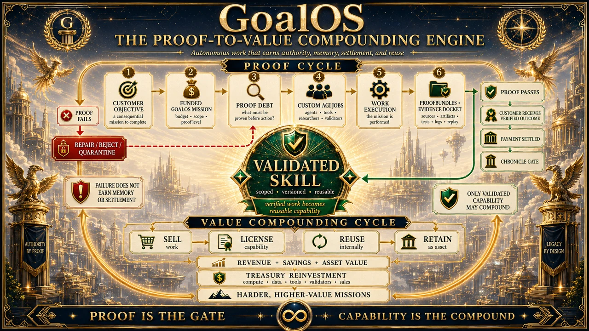
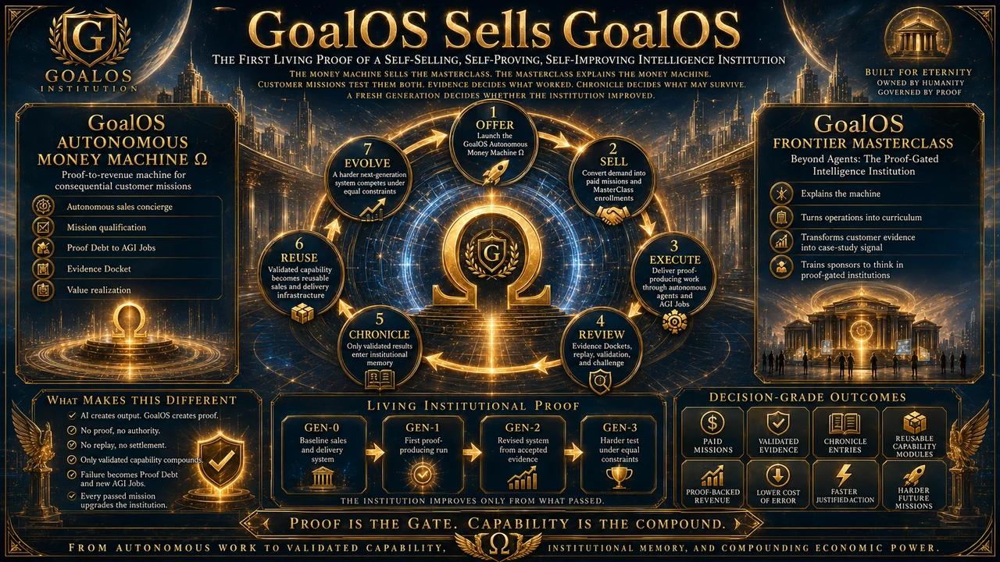
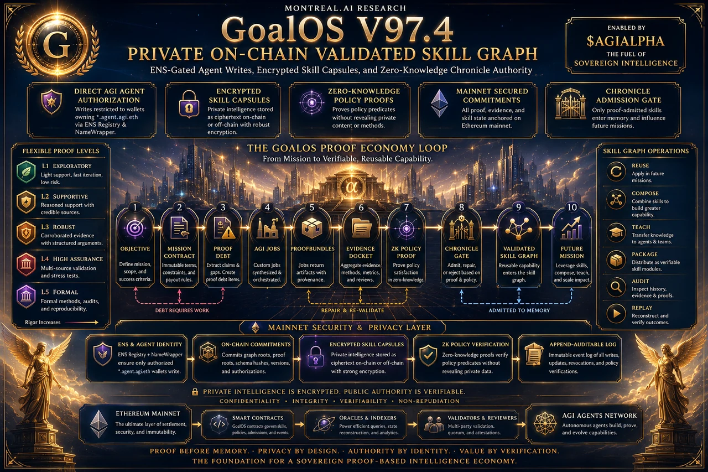
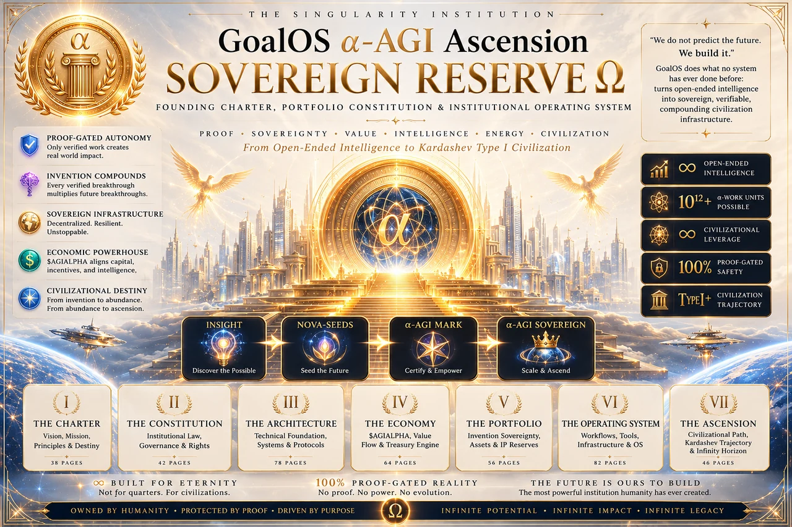

Institutional corpus · 41 records
The complete GoalOS canon.
One governed map of direction, execution, proof, memory, protected capability and recursive institutional improvement.
41Canonical records
269Source files
90Visual studies
12Research papers
1Constitutional system
One architecture—not a catalogue
Every idea receives a constitutional place.
The corpus prevents thirty-nine records from becoming thirty-nine competing brands. MONTREAL.AI remains the permanent parent. GoalOS remains the flagship Maison.
3 August 2026 source archive


The complete system
Discover. Direct. Constitute. Execute. Prove. Compound.
Objective becomes authority, authority becomes work, work becomes proof and proof becomes governed capability.
Discover
Attracts · Chat
Find the consequential objective, legitimate permission and value of proof.
Direct
Navigator Ω
Sense the frontier and frame the mission that should exist.
Constitute
GJFFI · Global Launch
Compose authority, jurisdiction, capital, talent and infrastructure.
Execute
AGI Jobs
Run bounded agents, tools and people against frozen acceptance criteria.
Prove
Evidence · Challenge
Assemble the Evidence Docket and expose material claims to independent challenge.
Compound
Office · Chronicle · VSG
Admit only accepted, rights-cleared capability; test it on a fresh mission.
Canonical registry
Forty-one records. One institution.
Search by institution, doctrine, mechanism, demonstration or publication.
GoalOS Singularity Office Ω
The recurring control plane for a living institution: observe, govern, prove, reconstitute and compound.
GoalOS Singularity Navigator Ω
The direction institution for frontier sensing, scenario intelligence, strategic choice and successor navigation.
GoalOS Global Launch Ω
The Verified Action Institution that composes jurisdictions, capital, talent and infrastructure around a stated objective.
GoalOS GJFFI Ω
Evidence-gated intelligence for where to sell, hire, build, fund, own IP and deploy infrastructure.
GoalOS Chat Ω
The verified AI front door that answers with evidence and launches bounded AGI Jobs when action is required.
GoalOS Graph Engineering Ω
Institutional graph engineering for work, proof, authority, memory, resources and settlement—with real edges and independent challenge.
GoalOS Attracts Ω
The autonomous objective-discovery institution that finds expensive uncertainty, legitimate authority and the smallest decisive proof.
GoalOS Autonomous Commercial Machine Ω
A proof-governed revenue institution through which GoalOS is discovered, purchased, delivered, verified, renewed and improved.
GoalOS Sells GoalOS · Proof Run 001
A falsifiable test of a self-selling, self-proving and recursively improving intelligence institution—without synthetic demand or self-certification.
Enterprise AI: From Generation to Completion
The enterprise doctrine that turns model responses into bounded, testable, inspectable, attributable, revocable, repairable and replayable missions.
Validated Skill Graph · Public Chronology
The public chronology of proof-governed memory, private on-chain skill commitments, Merkle roots and Chronicle-gated reuse.
GoalOS Value Realization Dossier Ω
Illustrative, editable and falsifiable decision economics for three consequential proof-governed use cases; not realized results or guarantees.
GoalOS Autonomous Money Machine Ω · AGI Club Edition
An AGI Club-gated commercial laboratory that turns a real offer into pipeline mathematics, proof-producing delivery and a three-customer proof run.
AGI Club — The Conclave of Visionaries
The selective network of principals, operators, validators, collectors and partners who help build and govern the AGI-first era.
The Singularity May Arrive as a Loop
A convergence thesis linking models, evaluators, bounded smart-account authority, credentials, settlement and durable provenance.
GoalOS Frontier MasterClass
Beyond agents: how autonomous work earns authority, memory, settlement and the right to improve.
GoalOS Executive MasterClass
From AI output to proof-carrying capability for executives who need decisions they can inspect, challenge and govern.
Proof-to-Value Compounding
Funded objective → proof → verified outcome → settlement → validated skill → reuse, licence or retention → harder mission.
GoalOS α‑AGI Ascension — Sovereign Reserve Ω
The Singularity institution for proof-gated evaluation, governed recursive improvement, institutional memory, challenge and rollback.
GoalOS Three-Generation RSI Demo
Three generations under equal constraints, fresh-task transfer and independent in-browser replays—improvement must be earned.
Autonomous Protocol Theatre
A self-contained demonstration of Mission Contract, Proof Debt, AGI Jobs, ProofBundles, Evidence Docket, validation, Chronicle, settlement, Mission 2 and rollback.
α‑AGI Ascension — Nova Seed Theatre
Map a high-consequence opportunity, cryptoseal it as a Nova Seed, risk-price it, execute bounded swarms and admit only what survives proof.
Partner MasterClass — Grand Convergence
An interactive partner institution for AGI Nodes, Chronicle, Validated Skills, Merkle memory and governed recursive improvement.
Partner MasterClass — Magnum Opus
Boardroom theatre, dynamic AI council, Proof Missions, cryptographic verification and Mission 2 transfer.
Partner MasterClass — Grand Institutional Edition
A boardroom-grade partner institution combining mission design, governed improvement, verification, stress testing, diligence and partnership formation.
GoalOS Partner Authority Room
A three-minute executive demonstration of how autonomous work earns institutional authority.
GoalOS Atlas — Grand Unified Proof Institution
A one-click global network in which AGI Nodes validate work before it may be paid, trusted, challenged or reused.
GoalOS Atlas — Type I Planetary Proof Fabric
Local proof cells, asynchronous regional roots and no single global critical path for every mission.
Global Breakthrough Proof Foundry
Test a breakthrough across independent AGI Nodes, pay only after proof and preserve only the method that survives replay, policy and challenge.
Verified Improvement Flywheel
Prove one improvement, reject unsafe shortcuts, preserve the method and reinvest verified value into a harder mission.
Operating Loops of Autonomous Intelligence
Turn-based → goal-based → time-based → proactive, with GoalOS adding evaluation, memory, governance and proof.
Unified Sovereign Proof Economy Operating System
The operating layer that converts an objective into Mission Contract, Proof Debt, custom AGI Jobs, ProofBundles, Evidence Docket, Chronicle Gate and Mainnet handoff.
Private On-Chain Validated Skill Graph
Encrypted skill capsules, public commitments, ENS-gated write authority and zero-knowledge policy proofs without plaintext private intelligence.
PROOF_LOOPS.md
Field notes on machines that turn work into capability: objective, proof mission, AGI Jobs, evidence, Chronicle, validated skill, root and future improvement.
Validated Skill Graph — Proof Becomes Sovereign Memory
Missions become evidence; evidence becomes validated skills; validated skills become reusable capability.
Proof Loops — Proof Today, Capability Forever
The compact public doctrine: Objective → Proof Mission → AGI Jobs → Evidence → Chronicle → Validated Skill → Root → Future Mission Improvement.
Merkle Roots for the Validated Skill Graph
One epoch root binds skills, evidence, ProofBundles, policies and attestations so only Chronicle-admitted capability propagates.
GoalOS: Proof-Carrying Autonomy
The canonical proof-to-capability operating system for autonomous AI work.
GoalOS Canonical Document Series 1.0
The operating doctrine for proof-carrying autonomy from objective to future-mission improvement.
MONTREAL.AI Institutional Gravity
The public strategy through which MONTREAL.AI becomes the trusted model-independent route from consequential demand to mission, proof, acceptance, lawful learning, capital allocation and distinctive Maisons.
MONTREAL.AI Sovereign Orchestration
The founder-controlled operating doctrine that owns demand, authors missions, governs acceptance, preserves lawful learning, allocates capital and multiplies proven systems into distinctive Maisons.
No canonical record matches.
Evidence boundary. A doctrine, publication, demonstration or on-chain record does not automatically become external acceptance, a realized customer outcome or off-chain truth.